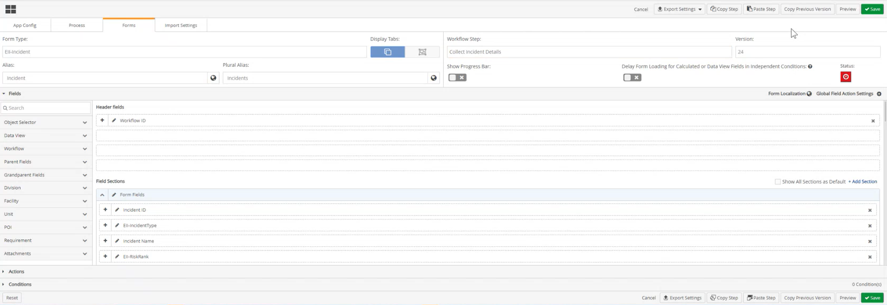
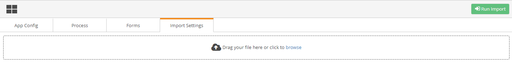
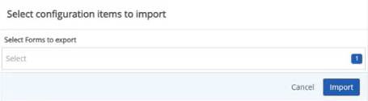
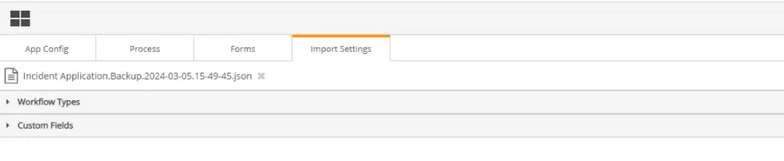
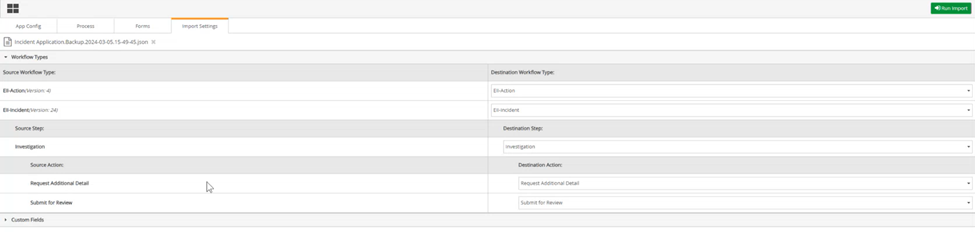
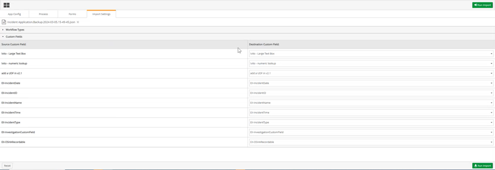
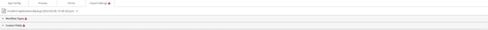
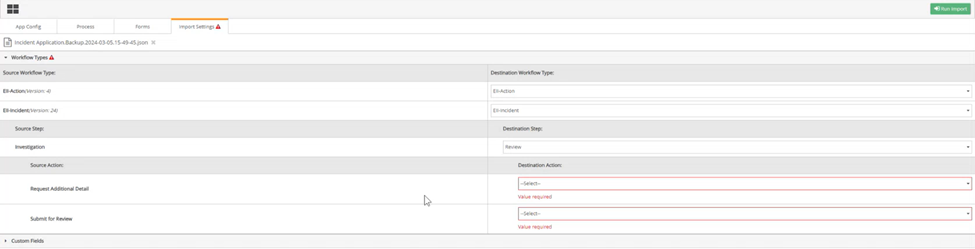
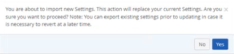

To Import Settings from a JSON File of an Advanced Workflows (WAB) solution in to another.




Dropdown list selections with associated conditions should match in both the source and destination Workflows to avoid validation errors at run time.
Roles for the source and destination Workflow Types should match to ensure automatic transition settings are assigned correctly and/or the appropriate manual assignment selections are available.
a. If Source IDs and Destination IDs or the Source name and Destination name matches:
i. A warning icon will not display to the right of either the Workflow Types ribbon, or Custom Fields ribbon.

ii. Under the Workflow Types or Custom Fields ribbon in the Destination section there will be no fields with alerts in red stating value required.

Destination ID fields will be auto populated with the best match when comparing to the Source ID fields. Where possible users can click the drop-down textboxes to select from other suggested IDs or names.
b. If the Source IDs and Destination IDs or the Source name and Destination name match do not match
i. A warning icon will display to the right of either the Workflow Types ribbon, or Custom Fields ribbon.

ii. Under the Workflow Types or Custom Fields ribbon in the Destination section there will be fields with alerts in red stating “value required”.

